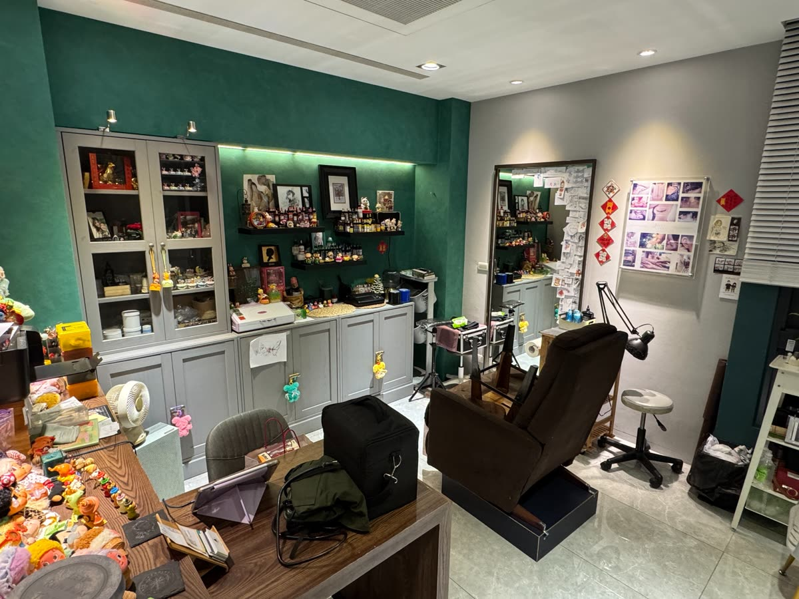
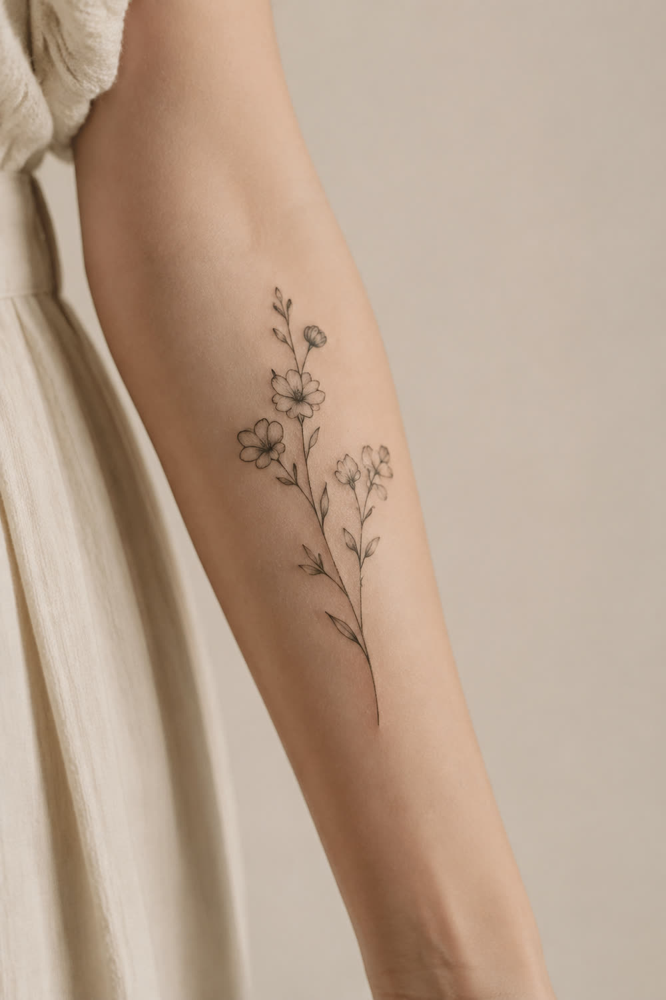
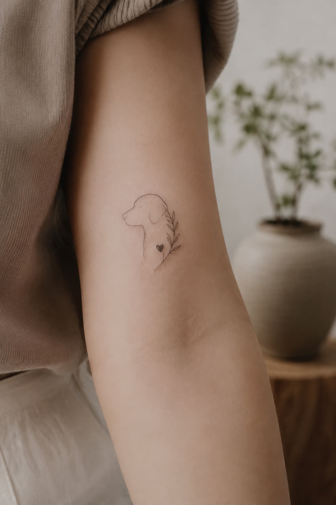
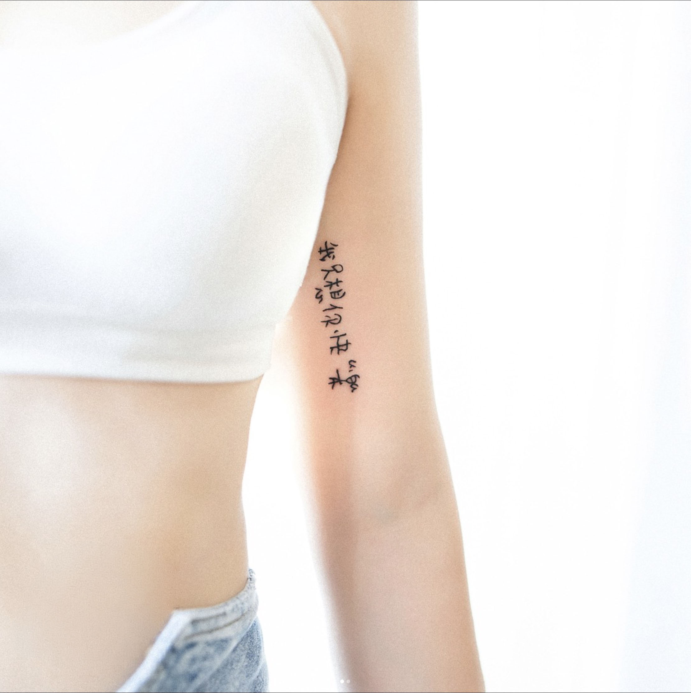
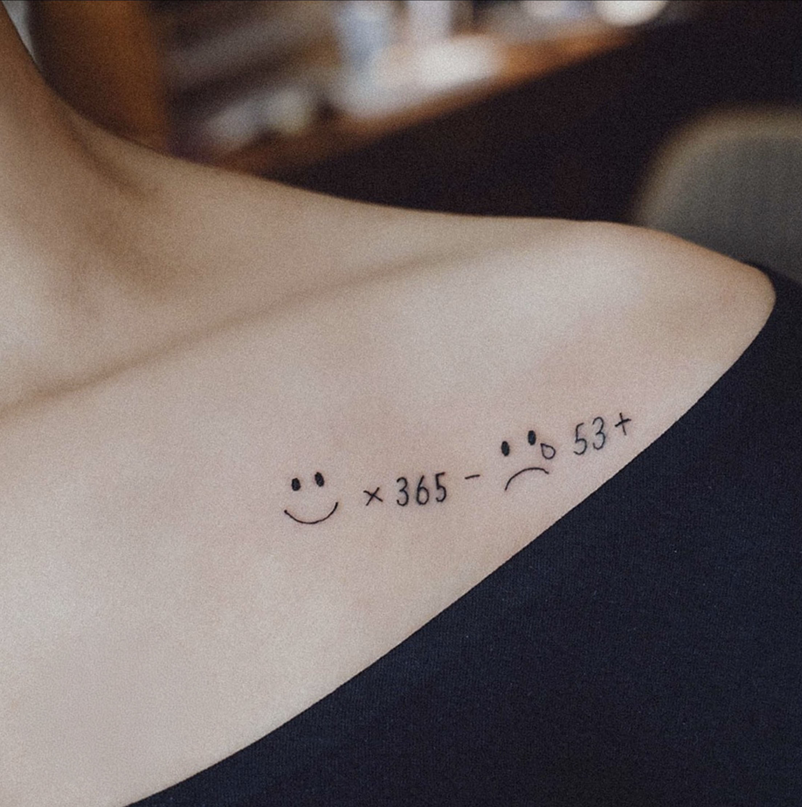
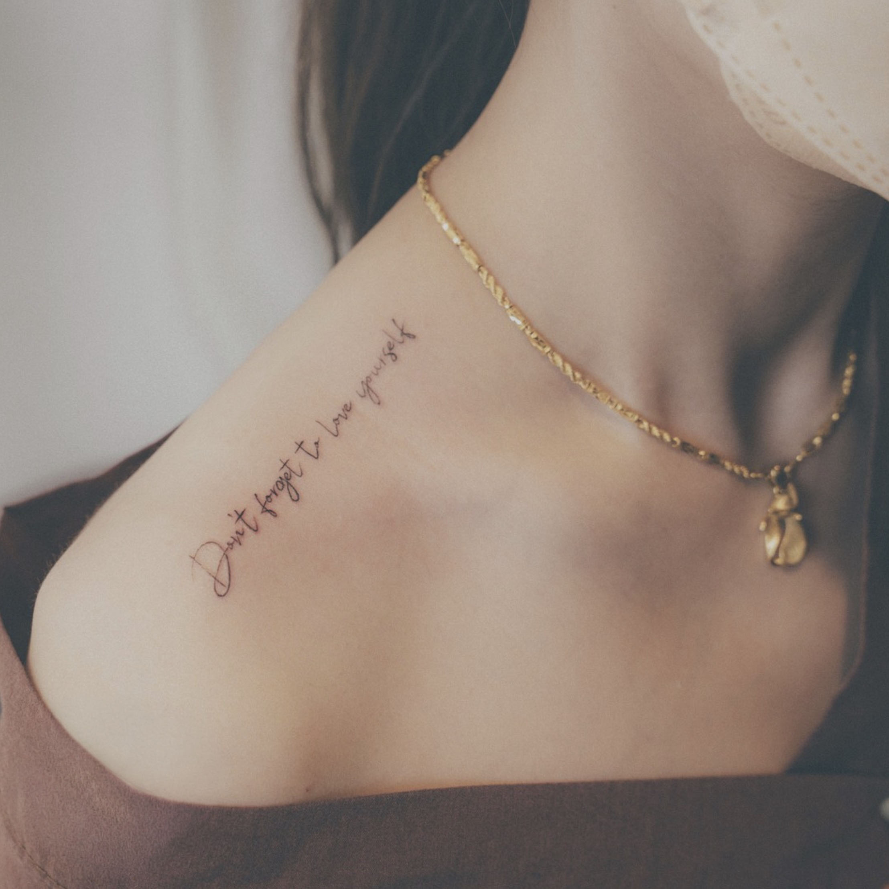
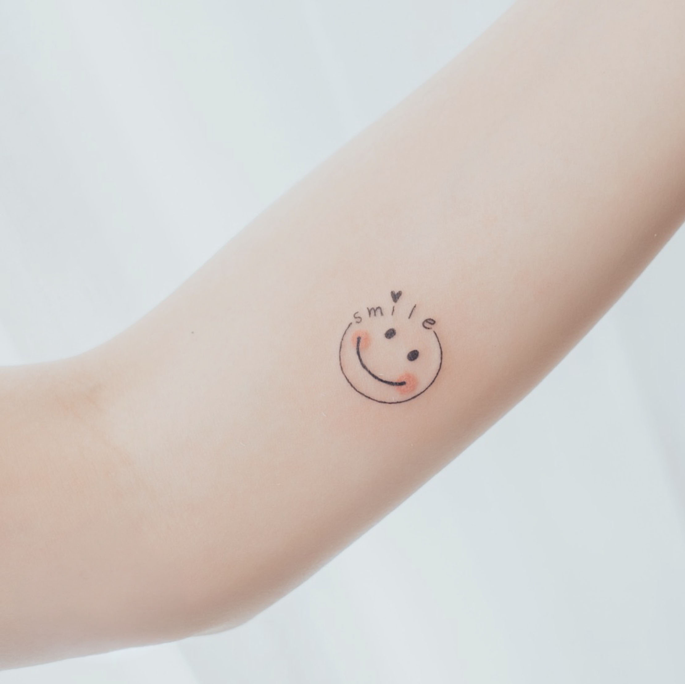
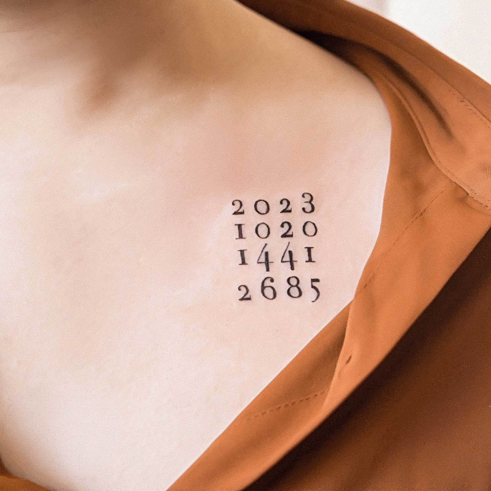
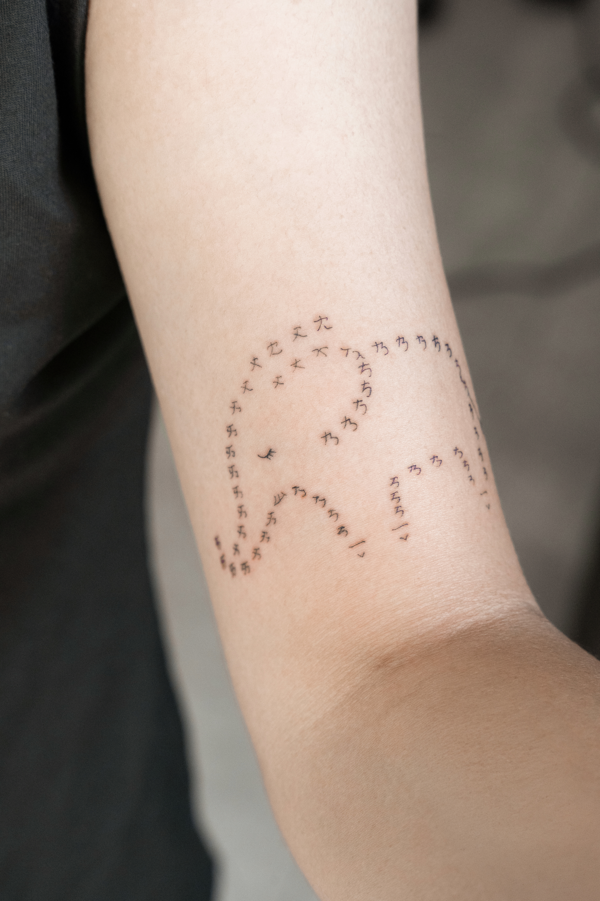

嘉義微刺青
忠於自己
無需多言
Be true to yourself.
No words. Just do it
SCROLL TO EXPLORE ↓
THE STUDIO · 01
有些故事，不必說出口。
可能是一個人、一段回憶、一個名字，
也可能只是某個你不想忘記的瞬間。
我們把那些對你重要的事，
慢慢畫成一個剛剛好的圖案，
留在你選擇的位置，陪你久一點。
BY APPOINTMENT ONLY
CHIAYI, TAIWAN

SELECTED WORKS · 03
手上的小風景
每一張作品，都是留給生活的一個記號。








BOOKING GUIDE · 04
從想法，
到你身上的一筆。
簡單、清楚，也保留讓你安心確認的時間。
- 01傳送想法
提供部位、尺寸與喜歡的參考風格。
- 02確認報價
依圖案與細節提供適合的方案。
- 03專屬設計
確認訂金後，開始為你繪製草稿。
AFTERCARE · 05
刺青後保養
讓線條穩定留下來，也讓皮膚好好恢復。
- 01薄擦刺青師建議的修護產品，保持皮膚微潤即可，避免厚敷。
- 02結痂、脫皮、微癢屬常見恢復過程，請勿摳抓或撕皮。
- 03約 1–2 週內避免泡澡、游泳、溫泉、三溫暖及長時間泡水。
- 04恢復期間避免劇烈曝曬；癒合後建議做好防曬，減少退色。
- 05避免衣物長時間摩擦刺青處，也不要讓寵物舔舐或接觸傷口。
- 06若出現持續加劇的紅腫、熱痛、膿液、發燒或其他明顯異常，請儘快就醫。
- 07刺青滿一個月後，可視恢復與著色情況安排一次免費補色。
好好照顧它，讓留下來的，不只是當下。
LET’S MAKE IT PERSONAL
你的故事，
值得一個位置。
開始預約諮詢 ↗CHIAYI · BY APPOINTMENT ONLY · SINCE 2016